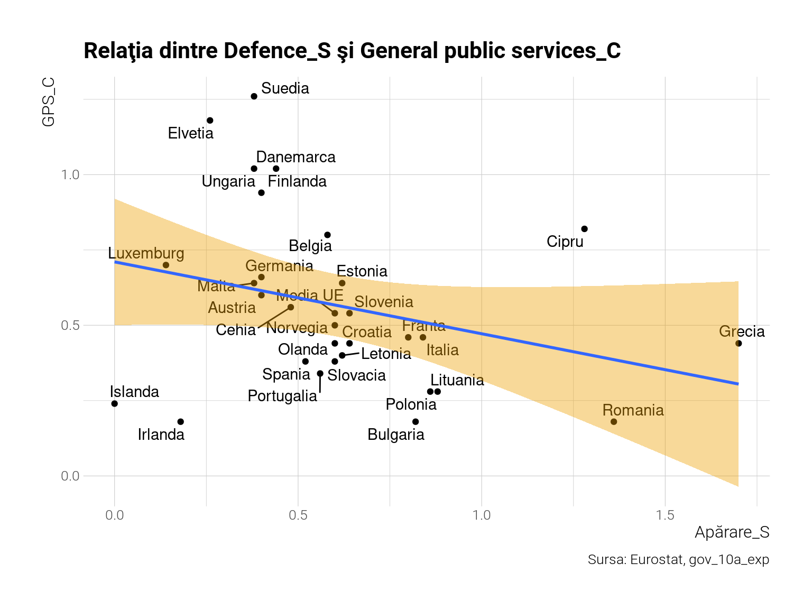

PCA înseamnă Analiza componentelor principale, o metodă din cadrul statisticii multivariate, înrudită cu analiza factorială, care încearcă să descopere axe/dimensiuni (de obicei două, ca o hartă 2D) pe care poţi proiecta un set de date cu mai multe variabile astfel încât distorsia să fie minimă. E doar un fel de a vedea acestă metodă. Mai există şi alte interpretări echivalente. Axele respective sunt combinaţii liniare ale variabilelor originale astfel, coeficienţii liniari fiind aleşi în aşa fel încât varianţa datelor originale este prezervată la maximum posibil (date fiind constrângerile liniare) în noile axe. Tehnic vorbind, ea este eigen-decompoziţia matricei de covarianţă a datelor sau de corelaţie, după caz. Dacă se foloseşte matricea de corelaţie acest lucru este echivalent cu a standardiza datele înainte de eigen-decompoziţiei. Vă puteţi gândi la ea ca la o hartă care vă permite să vedeţi în mai multe dimensiuni proximitatea observaţiilor.
2 Cheltuielile statelor europene
Statele europene şi în general cele din lume cheltuie bani pe o sumedenie de lucruri, clasificate în multe categorii astfel că e greu să ai o idee cât de similare sunt ţările între ele după acest aspect. Şi, mai ales, care din categorii/variabile explică această similaritate. PCA poate face chiar acest lucru: o hartă a similarităţii traduse în proximitate plus explicaţii care justifică aceste proximităţi. Acest aspect dual al metodologiei PCA este ilustrat sub forma unui biplot: axele - harta similarităţii între observaţii, săgeţile (în cazul nostru albastre), direcţiile spre care cresc categoriile respective. Astfel, dacă România e în direcţia, să zicem, a cheltuielilor cu apărarea şi în sensul opus al săgeţii care indică cheltuieli sociale, interpretăm acest lucru în sensul că România cheltuie disproporţionat pe apărare şi mai puţin pe statul social luând în seamă tot setul nostru de observaţii. Sigur, matematic e mai complicat de atât, dar de foarte multe ori regula aceasta se menţine şi ajută interpretarea.
3 Profile de ţări după cheltuieli
Acum vom descărca setul de date de la Eurostat gov_10a_exp şi vom selecta toate categoriile de cheltuieli ca procent din PIB. Setul e enorm, are 32 de milioane de linii de tabel. Sunt peste 70 de categorii de cheltuieli detaliate după funcţie şi cont (salarii, capital, transferuri, total, etc). De asemenea, pentru robusteţe vom face media ultimilor 5 ani disponibili, pentru a nu surprinde vreo variaţie întâmplătoare şi tranzitorie. Nu vom opta pentru toate subcategoriile, întrucât doresc să studiez şi clasificările după conturi, ci doar pentru cele 10 agregate largi, fiecare subîmpărţită în cheltuieli de capital, salarii şi total. Deci în total 30 de variabile pentru 30 de ţări plus media UE.
Cele treizeci de variabile se transformă într-o hartă a simitudinilor dintre ţări în biplotul din Figure 1.
Code
biplot(mat, p=0.5, clusters=5, k=10, scale=TRUE)
Figure 1: Biplot cu cheltuieli bugetare
Harta e grăitoare în modul în care clasifică ţările în clusteri (după metoda uzuală k-means). Suntem alături de colegii bulgari la capătul extrem pozitiv al axei 1 (orizontala) care explică 20 % din variaţia originală a setului, direcţie corelată pozitiv cu cheltuieli de apărare şi ordine publică (poliţie, jandarmerie, etc) în special salariile din sectorul apărării şi ordinii publice (sufixul _S de la salarii). Danemarca, Finlanda, Suedia sunt la capătul opus al axei, înspre direcţia cheltuielilor cu asistenţa socială, educaţie, sănătate, lucru pe care-l cunoaştem deja şi ni-l confirmăm suplimentar aici. Ne putem gândi la această axă orizontală, principală, ca la axa progresist-reacţionar. La capătul drept sunt statele “de dreapta” - reacţionare, care investesc în poliţie şi armată, pe când la capătul stâng sunt statele progresiste care investesc în societate. Am descoperit din datele brute o axă care se transpune direct în ideologia politică stânga-dreapta economic. Axa a doua este mai greu de interpretat: direcţia de jos e corelată cu subvenţiile (economic affairs), direcţie de sus nu e corelată cu nimic în sens pozitiv, doar uşor cu cheltuielile totale în protecţia socială (numai parţial), ci doar negativ tot cu subvenţiile şi cheltuielile de cultură. E o axă a valorilor materiale mai mult, deşi este doar o părere subiectivă şi poate suprainterpretez. De asemenea, corelaţiile dintre variabilele originale şi unghiul dintre săgeţi se respectă mai bine când procentul de varianţă explicată e mai mare (valoarea din textul axelor). Altminteri corespundenţele vor fi doar aproximative. Pentru a aproxima corelaţiile originale s-ar putea să fie nevoie de mai multe axe, dar vor fi mai greu de vizualizat. În cazul nostru trei axe ar explica 50 % din variabilitatea datelor originale versus 37 % (20 orizontala, 17 verticala) cu două, cum avem aici.
Dar să mergem mai departe şi să verificăm dacă este aşa cum arată biplotul, analizând poziţia la care sunt aceste ţări la aceste cheltuieli în clasamentul european.
Pentru început, cheltuielile cu salariile din apărare vs cheltuielile de capital în servicii publice generale. Sunt pe axe opuse în biplot, deci ne aşteptăm să vedem o corelaţie negativă puternică între ele în graficul din Figure 2 .
Code
#|x %>%mutate(variable=paste0(cofog99, "_", na_item)) %>%filter(grepl("Defence_S|General.+C$", variable)) %>%select(-1,-na_item) %>%spread(variable, values) %>%set_names(c("geo", "Apărare_S", "GPS_C")) %>%ggplot(aes(x=Apărare_S, y=GPS_C)) +geom_point() + ggrepel::geom_text_repel(aes(label=geo)) +geom_smooth(method="lm", fill="#EEA100") +labs(title="Relaţia dintre Defence_S şi General public services_C", caption="Sursa: Eurostat, gov_10a_exp")

Figure 2: Relaţia dintre cheltuielile pe apărare (salariale) şi cele de capital pentru serviciile publice generale
Corelaţia este într-adevăr negativă, deşi nu puternic (doar -0.29), însă este printre cele mai mari corelaţii negative pe care o are Defence_S cu oricare dintre variabile, după cum arată graficul următor din Figure 3.
Code
mat %>%cor() %>% .[,grepl("Defence_S", colnames(mat))] %>%enframe() %>%mutate(name=fct_reorder(name, value)) %>%ggplot(aes(x=name, y=value)) +geom_col(aes(fill=value), show.legend = F) +coord_flip() +scale_fill_gradient2_tableau() +labs(title="Corelaţiile Defence_S cu restul variabilelor",subtitle="Corelaţiile Pearson",caption="Sursa: calcule proprii pe Eurostat gov_10a_exp") +theme(plot.title.position ="plot",panel.grid.major.y =element_blank())
Figure 3: Corelaţiile Defence_S cu restul variabilelor
Ordinea din grafic pare să respecte sensul acelor de ceasornic din biplot pentru săgeţi. Avem un unghi de aproximativ \(90^o\) între Defence_S şi Education_S, ceea ce se traduce prin corelaţie aproape de 0 (lipsa corelaţiei). România se remarcă prin cele mai mari cheltuieli în salariile din apărare (în afara Greciei) versus printre cele mai mici investiţii în servicii generale publice. Cam ca în toate sectoarele bugetare din România, salariile acoperă 60-80 % din totalul cheltuielilor. În cazul apărarii, raportul este de 72 %. În sectorul ordinii publice, el trece de 80 %. Chiar şi în educaţie el este aproape de 70 %. Vedeţi diferenţele dintre media europeană şi România în ceea ce priveşte procentul alocat salariilor din total în graficul următor.
Figure 4: Procentul de salarii din total cheltuieli
Se pare că la apărare mare parte din cheltuielile cu care se mândreşte statul român sunt pe salarii disproporţionat mai mult decât media europeană.
Aşadar, putem interpreta biplotul cu încredere. România, împreună cu Bulgaria sunt cele mai extreme state în materie de cheltuieli cu armata şi ordinea publică conform Figure 1 . România, stat poliţienesc ! La polul opus, Danemarca este cel mai social stat. De curiozitate, axele 3 şi 4 nu au o intepretare facilă. Axa 3 poate fi interpretată ca o axă a cheltuielilor de capital vs salarii în general şi cam atât.
4 Concluzie
Puteţi folosi PCA într-o multitudine de aplicaţii. Ori de câte ori aveţi variabile multiple şi doriţi să descoperiţi relaţiile dintre ele într-un mod facil această unealtă este la îndemână. Însă trebuie menţionat că e doar o unealtă, nu e universal aplicabilă. Poate fi viciată de outlieri, de dimensionalitatea intrinsecă înaltă a datelor (caz în care devine inutilă căci nu e nimic de proiectat într-un spaţiu dimensional mai jos). De asemenea toate interpretările de mai sus se aplică doar dacă se foloseşte versiunea care standardizează datele înainte. Altiminteri alte interpretări sunt disponibile, dar despre acest lucru cu altă ocazie. Ce se poate spune analizând cheltuielile bugetare din Europa cu această metodă este că suntem un stat cu profil preponderent miliţienesc. Suntem locul 2 în Europa la cheltuieli cu apărarea (din care majoritatea covârşitoare doar salarii) şi locul trei la ordine publică şi siguranţă, de asemenea mai degrabă salarii în comparaţie cu media europeană. Deşi avem un grad de colectare redus, cheltuim peste 2 % din PIB cu ordinea publică, pe când Danemarca cheltuie sub 1 %. Cu atât mai mult atârnă ca proporţie din bugetul total.